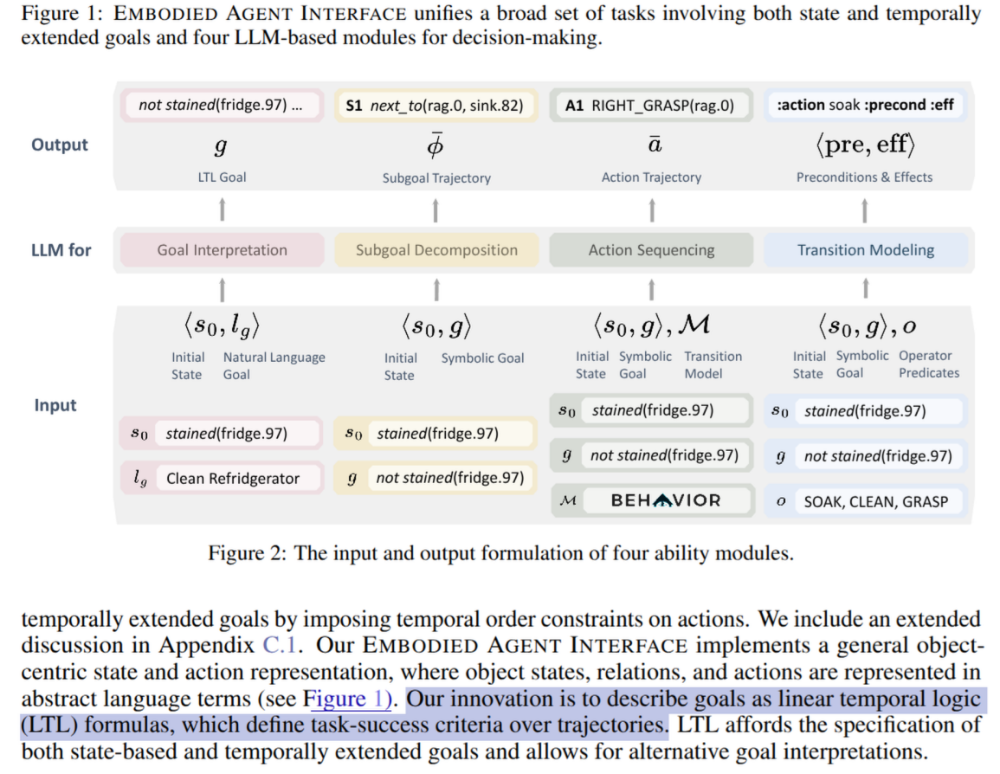
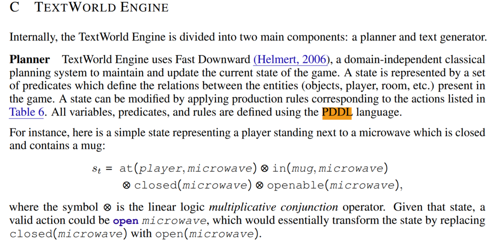
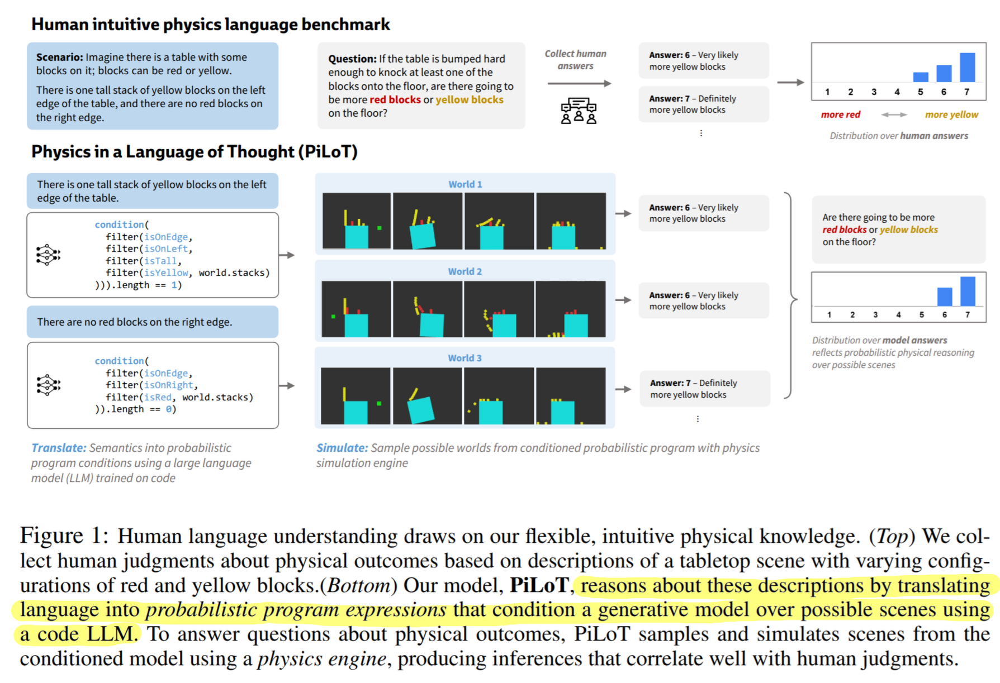

The research idea is confidential and you need password to access to the content, sorry for any inconvenience.
Encrypted Section
Part of this article is encrypted with password:
🧭 1. Short Motivation#
Tips
What is the problem you’re tackling?
Why is it important?
- Ground the reader in a real, compelling issue in the ML/AI landscape.
- Mention a bottleneck, limitation, or a surprising gap in current literature.
Consolidate this after you find out the concrete research area and prior work
-
Neuro-symbolic approaches for embodied agents have shown impressive capabilities in following natural language instructions across diverse environments and robotic embodiments.
-
However, most existing studies assume a uniform instruction granularity — often are highly detailed and action-specific. In contrast, human instructors naturally vary the level of instruction granularity depending on the context, the learner’s expertise, and habitual communication style.
-
Thus, we see a clear mismatch between research assumptions and real-world scenarios.

[!IMPORTANT]
By leveraging Hector Geffner’s Policy sketch formalism to model natural language instructions, we can systematically quantify the granularity of these instructions.
| Aspect | High-Level Instruction | Low-Level Instruction |
|---|---|---|
| Subproblem Coverage | Few subproblem are omitted (e.g., washing dishes) | Full pipeline: get → cook → assemble → serve → wash |
| Feature Count | Fewer features (e.g., omit is_clean predicate for plates, or omit distance property of the target objects) | More features |
| Type Specificity | General (e.g., Chop vegetables) | Precise (e.g., “Chop tomatoes”) |
| Example Instruction | “Prepare rice, seaweed and fish, make sushi, and then serve it to the table.” | “Pick up rice, cook it in the top-left pot, then place it on a plate with seaweed and chopped fish. Blah blah… |
📚 2. Background & Related Work#
Tips
You shall not be the first one working on this topic. Find the prior works that are closely relevant to what you want to solve. Ask yourself — How did those works solve the research problem you target, what are the advantages and trade-offs of your approach?
[!TIP]
You can design a prompt for ScholarQA
🧠 Topic 1: Formal Representation of Instruction Abstraction#
Prompt for ScholarQA:
What prior work has proposed formal or symbolic models to represent the abstraction level of natural language instructions in planning, robotics, or instruction-following tasks? Are there existing frameworks (e.g., program sketches, hierarchical policies, task decomposition) that allow explicit modeling or control over instruction granularity?
Check the details for Topic 1
https://ai2-scholar-qa.allen.ai/query/cfa8c2b1-ad07-46ca-9e17-532c7036dcc0
Background
Human instructors convey NL instructions with varying levels of granularity depending on context, user expertise, and habitual communication style. This variation creates a key challenge for embodied agents: instructions can range from abstract commands (e.g., “deliver the package”) to detailed procedures (e.g., “move to coordinates (x, y), ensure hands are empty, then pick up the package”). This diverse abstraction spectrum makes it difficult for agents to adapt and ground instructions into concrete action sequences.
Formal and symbolic representations have emerged as a crucial bridge between the flexibility of NL and the structured representations required by computational systems [1,2], targeting several key challenges:
- Disambiguating vague instructions
- Inferring implicit steps
- Handling instructions at varying levels of abstractions
Related Work
Prior works have leveraged well-established symbolic representation frameworks to map NL instructions into symbolic formalism to that support symbolic reasoning and action planning. Below, we outline three main classes of symbolic representations used for this purpose:
-
Temporal Logic has been a cornerstone method for representing time-dependent properties and constraints within instructions [6, 7]. It enables the decomposition of high-level goals into temporal subgoals [4, 8] and even serves as specification language for tasks in embodied agent benchmark simulators [5].

-
PDDL (Planning Domain Definition Language) has also been widely adopted as an intermediate formalism in embodied instruction following. Some recent works translate natural language task descriptions into PDDL [9, 10, 11], enabling the use of external symbolic planners to generate or verify action sequences. This pipeline offers robustness against hallucinations by LLM agents and provides a structured, declarative representation of tasks that supports symbolic reasoning.
Benchmarks like ALFWorld [12] employ PDDL to formally specify the environment. Participants are prompted to derive the world’s PDDL representation from perceptual inputs and natural language instructions [13].

However, mainstream PDDL planners have limited support for modeling expert instructions (i.e., behavior preference) [14]. The language itself also lacks expressivity for capturing different levels of granularity in expert instructions, which is the focus of our work.
-
Programs as Plans. Some works represent tasks as executable programs — such as Python scripts [15] — or probabilistic programs [1], enabling structured reasoning about physical outcomes of actions. based on NL descriptions [3].

Sum up
However, most existing approaches assume a fixed (often low-level) or uniform level of granularity in instructions. The challenge of modeling instructions that vary in granularity remains under-explored. While hierarchical policy models — such as option-based MDPs [16] and architectures combining high-level planners with low-level executors [17, 18] — partially address abstract high-level instructions, their focus remains on task decomposition and policy optimization, not on modeling the semantic structure of instruction language itself. To this end, we investigate how policy sketch formalism — a structured representation developed recently [citation], can be leveraged to explicitly account for different instruction granularity levels, thereby enabling more robust reasoning and action generation.
Ref:
[1] Wong, Lionel, et al. “From word models to world models: Translating from natural language to the probabilistic language of thought.” arXiv preprint arXiv:2306.12672 (2023).
[2] Tenenbaum, Joshua B. “Cognitive and computational building blocks for more human-like language in machines.” (2020).
[3] Zhang, Cedegao, et al. “Grounded physical language understanding with probabilistic programs and simulated worlds.” Proceedings of the annual meeting of the cognitive science society. Vol. 45. No. 45. 2023.
[4] Wang, Jun, et al. “Conformal temporal logic planning using large language models.” arXiv preprint arXiv:2309.10092 (2023).
[5] Li, Manling, et al. “Embodied agent interface: Benchmarking llms for embodied decision making.” Advances in Neural Information Processing Systems 37 (2024): 100428-100534.
[6] Wang, Christopher et al. “Learning a natural-language to LTL executable semantic parser for grounded robotics.” Conference on Robot Learning (2020).
[7] Yongchao Chen, Rujul Gandhi, Yang Zhang, Chuchu Fan. “NL2TL: Transforming Natural Languages to Temporal Logics using Large Language Models.” EMNLP 2023: 15880-15903
[8] Liu, Jason Xinyu, et al. “Lang2ltl: Translating natural language commands to temporal specification with large language models.” Workshop on Language and Robotics at CoRL 2022. 2022.
[9] Guan, Lin, et al. “Leveraging pre-trained large language models to construct and utilize world models for model-based task planning.” Advances in Neural Information Processing Systems 36 (2023): 79081-79094.
[10] Mahdavi, Sadegh et al. “Leveraging Environment Interaction for Automated PDDL Translation and Planning with Large Language Models.” Neural Information Processing Systems (2024).
[11] Huang, Sukai, Nir Lipovetzky, and Trevor Cohn. “Planning in the Dark: LLM-Symbolic Planning Pipeline without Experts.” Proceedings of the AAAI Conference on Artificial Intelligence. Vol. 39. No. 25. 2025.
[12] Shridhar, Mohit, et al. “ALFWorld: Aligning Text and Embodied Environments for Interactive Learning.” International Conference on Learning Representations.
[13] Xie, Yaqi, et al. “Translating natural language to planning goals with large-language models.” arXiv preprint arXiv:2302.05128 (2023).
[14] Gerevini, Alfonso E., et al. “Deterministic planning in the fifth international planning competition: PDDL3 and experimental evaluation of the planners.” Artificial Intelligence 173.5-6 (2009): 619-668.
[15] Singh, Ishika, et al. “ProgPrompt: program generation for situated robot task planning using large language models.” Autonomous Robots 47.8 (2023): 999-1012.
[16] Andreas, Jacob, Dan Klein, and Sergey Levine. “Modular multitask reinforcement learning with policy sketches.” International conference on machine learning. PMLR, 2017.
[17] Wang, Zihao, et al. “Describe, explain, plan and select: interactive planning with llms enables open-world multi-task agents.” Advances in Neural Information Processing Systems 36 (2023): 34153-34189.
[18] Nottingham, Kolby, et al. “Do embodied agents dream of pixelated sheep: Embodied decision making using language guided world modelling.” International Conference on Machine Learning. PMLR, 2023.
🔍 Topic 2: Robustness to Incomplete or Underspecified Instructions#
Prompt for ScholarQA:
What prior work exists on instruction-following agents that are robust to incomplete, underspecified, or ambiguous natural language instructions, particularly in embodied or interactive environments? Include approaches from both end-to-end and neuro-symbolic models that handle ambiguity, implicit goals, or missing information during execution.
Check the details for Topic 2
https://ai2-scholar-qa.allen.ai/query/fee23fea-c021-4d9d-9465-7e71fdd92843
Background
Natural language instructions are often vague, or omit details that humans readily infer from context, but which pose significant challenges for instruction-following agents. For example, a command like “pick up the cup” may be ambiguous in an environment with multiple cups, relying on implicit contextual cues—such as “selecting the closest cup”.
Related Work
Approaches to handling ambiguous or underspecified instructions can be broadly categorized into end-to-end neural methods and neuro-symbolic frameworks.
Neural Approaches: End-to-end models often rely on large-scale training and multimodal attention mechanisms [4] to resolve ambiguity, such as those based on vision-language models like SAM [1, 2], Grounding DINO [3]. These models can leverage learned priors from pretraining to resolve some forms of reference ambiguity. However, their performance tends to degrade in out-of-distribution (OOD) environments [5] or tasks requiring compositional reasoning on novel compositions [6].
Neuro-symbolic approaches aim to resolve ambiguity in natural language by converting instructions into formal symbolic representations. For example, some methods disambiguate linguistic paraphrases by mapping them to discrete symbolic forms [7], while some translates free-form language into structured planning languages like PDDL [8]. However, traditional symbolic languages often only support deterministic inference, which struggles to handle the inherent uncertainty of natural language. To address this, probabilistic programming languages have been proposed to explicitly model such uncertainty, offering a more flexible approach [9, 10].
Sum up
In this work, we investigate Geffner’s policy sketch formalism, which provides a structural representation of rule-based general policy. One notable advantage of this approach is that it offers a way to quantify the ambiguity or underspecification of instructions by analyzing the time complexity of solving the corresponding subproblem via width-based planning. This complexity is influenced by both the quality of the features chosen (i.e., those aspects the instructor deems relevant) and the number of such features included in the sketch. Thus, policy sketches provide a insightful framework not just for interpreting abstract instructions, but also for measuring how difficult it is for an agent to act upon them, offering a principled lens on instruction ambiguity.
Ref:
[1] Kirillov, Alexander, et al. “Segment anything.” Proceedings of the IEEE/CVF international conference on computer vision. 2023.
[2] Nikhila Ravi, Valentin Gabeur, et. al. “SAM 2: Segment Anything in Images and Videos.” ICLR 2025
[3] Shilong Liu, Zhaoyang Zeng, Tianhe Ren, Feng Li, Hao Zhang, Jie Yang, Qing Jiang, Chunyuan Li, Jianwei Yang, Hang Su, Jun Zhu, Lei Zhang. “Grounding DINO: Marrying DINO with Grounded Pre-training for Open-Set Object Detection.” ECCV (47) 2024: 38-55
[4] Hill, Felix, et al. “Human instruction-following with deep reinforcement learning via transfer-learning from text.” arXiv preprint arXiv:2005.09382 (2020).
[5] Lake, Brenden, and Marco Baroni. “Generalization without systematicity: On the compositional skills of sequence-to-sequence recurrent networks.” International conference on machine learning. PMLR, 2018.
[6] Press, Ofir, et al. “Measuring and Narrowing the Compositionality Gap in Language Models.” Findings of the Association for Computational Linguistics: EMNLP 2023. 2023.
[7] Kazutoshi Shinoda, Yuki Takezawa, Masahiro Suzuki, Yusuke Iwasawa, Yutaka Matsuo. “Improving the Robustness to Variations of Objects and Instructions with a Neuro-Symbolic Approach for Interactive Instruction Following.” MMM (2) 2023: 635-646
[8] Xie, Yaqi, et al. “Translating natural language to planning goals with large-language models.” arXiv preprint arXiv:2302.05128 (2023).
[9] Tenenbaum, Joshua B. “Cognitive and computational building blocks for more human-like language in machines.” (2020).
[10] Wong, Lionel, et al. “From word models to world models: Translating from natural language to the probabilistic language of thought.” arXiv preprint arXiv:2306.12672 (2023).
🎓 Topic 3: Curriculum Learning of Instruction Granularity#
Prompt for ScholarQA:
What research has studied curriculum learning in instruction-following or reinforcement learning agents, specifically where the granularity or abstraction level of natural language instructions is varied over time? Are there existing studies that analyze how instruction specificity affects learning efficiency or generalization?
Check the details for Topic 3
https://ai2-scholar-qa.allen.ai/query/403fbe22-08b1-4ef5-bd6b-b2d666805a01
Background
Curriculum learning in artificial intelligence is inspired by pedagogical principles in human education, where learners are exposed to concepts in a structured order—typically progressing from simpler to more complex tasks [1, 2]. In machine learning, curriculum learning frameworks are often organized into two key components [3]:
- Complexity Assessment – estimating the difficulty of each task or example in order to prioritize learning.
- Scheduler Formulation – devising a strategy to sequence and pace the training data or tasks.
In the context of vision-and-language navigation (VLN), BabyWalk [4] introduced a curriculum-based approach by incrementally training agents on navigation tasks of increasing length and complexity, thereby allowing agents to progressively acquire and integrate navigational skills.
While curriculum learning has been applied in various embodied AI settings, there is limited work exploring curricula based on the granularity or abstraction level of natural language instructions. The most relevant line of work involves decomposing complex tasks into sequences of simpler subtasks and learn the policy gradually [5, 6]. However, these approaches primarily focus on scaling the task complexity itself. In contrast, we vary the linguistic abstraction of the instruction while keeping the underlying task constant.
Our focus differs: we hold the core embodied task fixed and manipulate only the abstraction level of the instructions provided to the agent. The challenge lies not in solving increasingly difficult tasks, but in reasoning from instructions that vary in granularity.
As in Topic 2, policy sketch formalism not only provides a structured representation of instructions at varying abstraction levels, but also offers a means of quantifying the interpretive difficulty of a given instruction. This enables us to explore two things:
-
We investigate whether the learning efficiency of embodied agents (e.g., VLA models) correlates with the planning width of the task sketch (a complexity metric from width-based planning formalism). A positive correlation would imply that:
- The model’s learning efficiency scales polynomially with problem size (where “size” is quantified via the number of “atoms” in the grounded problem world model)
- Actually I do not think the training time correlates to the planning width (otherwise we can never scale up), rather, I think the inference time (the time of action generation via denoising) may be correlates with the planning width of the policy sketch. Check the next section.
- If correlation is found (Yes):
- Granularity-Sensitive Computation
- Evidence: The model’s denoising steps scale with planning width (abstract instruction -> larger width).
- Implication: Develops causal alignment between language structure and action generation, mirroring human-like effort allocation:
- Abstract instruction -> system 2 (slow, require deep reasoning)
- Fine instruction -> system 1 (fast, shallow processing, even if the number of tokens required to be processed is larger)
- Granularity-Sensitive Computation
- If no correlation (No):
- Ablation Studies
- Hypothesis: Curriculum learning (low-level to abstract instruction) may artificially induce/obscure correlation.
- Tests:
- Ablate curriculum: Train on shuffled granularity → Measure correlation strength.
- Interpretation:
- Stronger correlation post-ablation → Curriculum was masking granularity-sensitivity.
- Weaker correlation → Granularity-sensitivity may require explicit architectural bias.
- Alternative Explanations
- Check if correlation is absorbed by other factors (e.g., instruction length, object count).
- Ablation Studies
- The model’s learning efficiency scales polynomially with problem size (where “size” is quantified via the number of “atoms” in the grounded problem world model)
-
Design optimal instructional curricula to identify how embodied agents best learn tasks. This inquiry may yield insights into human pedagogy, such as how instruction granularity affects learning.
Ref:
[1] Lee, Bruce W., Hyunsoo Cho, and Kang Min Yoo. “Instruction Tuning with Human Curriculum.” Findings of the Association for Computational Linguistics: NAACL 2024. 2024.
[2] Graves, Alex, et al. “Automated curriculum learning for neural networks.” international conference on machine learning. Pmlr, 2017.
[3] Wang, Xin, Yudong Chen, and Wenwu Zhu. “A survey on curriculum learning.” IEEE transactions on pattern analysis and machine intelligence 44.9 (2021): 4555-4576.
[4] Zhu, Wang, et al. “BabyWalk: Going Farther in Vision-and-Language Navigation by Taking Baby Steps.” Proceedings of the 58th Annual Meeting of the Association for Computational Linguistics. 2020.
[5] Kravchenko, Anna, and Rhodri Cusack. “The limitations of automatically generated curricula for continual learning.” Plos one 19.4 (2024): e0290706.
[6] Manela, Binyamin, and Armin Biess. “Curriculum learning with hindsight experience replay for sequential object manipulation tasks.” Neural Networks 145 (2022): 260-270.
🧠 Prompt 4: Adaptive Noise Schedule Based on Instruction Complexity in Diffusion/Flow Matching Based Generative Model#
Prompt for ScholarQA:
What research has explored adaptive noise scheduling, step control, or dynamic denoising strategies in diffusion models or flow matching-based generative models, especially in instruction-conditioned generation? Are there methods that estimate the complexity of conditioning input (e.g., language instructions, symbolic structure, task difficulty) and adjust the noise level, number of inference steps, or guidance scale accordingly to improve sample efficiency, quality, or reasoning alignment?
Check the details for Topic 4
https://ai2-scholar-qa.allen.ai/query/4ce728c6-1b94-4806-b3d2-82847e7efd26
We are not aiming to dive deeply into this topic, but rather to explore a practical hypothesis: that in VLA (vision-language-action) models where the action generation module is implemented via a flow matching-based generator, more concrete instructions should require fewer denoising steps to generate executable actions — a relationship where instruction concreteness governs the computational efficiency of action generation — more concrete instructions enable both faster convergence (fewer denoising steps)
To evaluate this, we take inspiration from [1] (Check summary) , which introduces Time Prediction Diffusion Models (TPDMs). TPDMs learn a plug-and-play scheduler that adaptively adjusts both the noise level and the total number of denoising steps during inference. The optimized scheduler allows simple prompts (e.g., “a single red apple”) to complete generation in fewer steps, while complex prompts (e.g., “an astronaut floating in space”) are allocated more steps for better fidelity.
In our proposed experiment, we can:
- Implement TPDM-style adaptive step scheduler in an instruction-conditioned flow matching action generator.
- Measure whether low-level or explicit commands lead to consistently fewer denoising steps compared to abstract instructions.
- Further investigate whether the optimized number of denoising steps learned by the scheduler correlates with the planning width of the policy sketch (a metric for instructional complexity (see Topic 3).
Ref:
[1] Ye, Zilyu, et al. “Schedule on the fly: Diffusion time prediction for faster and better image generation.” Proceedings of the Computer Vision and Pattern Recognition Conference. 2025.
🧪 3. Methodology and Experiment Setup#
Tips
Break this down as appropriate to your research:
Overall Approach – high-level method and pipeline
Key Components – any novel model, architecture, algorithm, or setup
Comparison or Baselines – what will you compare against? Make sure you know did the survey well and know the SOTA work
Implementation Details – how you will run this, what environment/tools/datasets


Overall Approach#
The embodied agent we use is
Check the diagram to see how policy sketch is involved.
Diagram
Key Components#
-
The mapping from natural language to policy sketch
- we need to collect training data for this mapping for different environments
- three stage training data
- Stage 1: image + NL instruction -> target features and policy sketches
- Stage 2: image + policy sketches -> which policy sketch is activated
- Stage 3: target features and activated policy sketch + image -> ground truth action and whether the policy sketch is completed
- Borrowing the idea of Classifier-Free Diffusion Guidance. During training, randomly replace sketches with:
- Abstract versions (higher-level goals, e.g., “Grasp tool” instead of “Close gripper to 5cm”)
- Concrete versions (detailed sub-actions)
null(10% probability) → Forces visual improvisation:- The agent must infer actions solely from target features and image context.
- Borrowing the idea of Classifier-Free Diffusion Guidance. During training, randomly replace sketches with:
- three stage training data
- Justification of the translation
- Check this Safe RL work
- condensed version of the NL instruction can be semantically vague.
- Check this Safe RL work
- we need to collect training data for this mapping for different environments
-
We may want to further train and eval the VLM to
- Grounding high level policy sketches into low level policy sketches
- Recover missing policy sketch
Comparison#
Given that this is the modification of the NL output of VLM into the corresponding symbolic representation. We therefore can compare our approach with
- Raw SmolVLA
- Raw OpenVLA
- Classical planner (check whether the inference time of VLA correlates to the planning time), only available in PDDLGym env
Experimental design#
Topic 1
- Comparing the performance with baselines
- Evaluate generalization performance
- Environment map size and training instance size
- transfer learning to new environment
Topic 2
- Re-plan the action by upgrade or downgrade the policy sketch
- Recover missing policy sketch
Topic 3
- analyze the learning efficiency of varying width of the policy sketch
- check whether the learning time / inference time correlates with the width of the policy sketch
- learn a curriculum scheduler that can gives the best learning efficiency
Topic 4
- already discussed already in the 📚 2. Background & Related Work section, train a TPDM-style adaptive step scheduler and prove the hypothesis.
Implementation Details#
Testing Environments:
🧠 4. Expected Contributions and Abstract Draft#
Tips
Contribution Paragraph Draft#
-
Propose Policy Sketch to account for the levels of granularity of NL instructions and model the complexity based on the width of the sketch
- or we say we propose a computational model that maps natural language instructions into symbolic policy sketch, which provide a formal basis for granularity measurement and problem decomposition.
-
We design the architecture and training for this Neuro-Symbolic instruction following AI
-
Propose a novel evaluation to fit the research study we focus on
Abstract Draft#
- Opening: Broad context and motivation
- Neuro-symbolic approaches for embodied agents have shown impressive capabilities in following natural language instructions across diverse environments and robotic embodiments.
- Problem Statement / Gap
- However, most existing studies assume a uniform, low-level instruction granularity—where all instructions are highly detailed and action-specific. In contrast, human instructors naturally vary the level of instruction granularity depending on the context, the learner’s expertise, and habitual communication style.
- Research Question / Aim
- In this paper, we address this gap by investigating how natural language instructions can be mapped into symbolic representations that explicitly account for varying levels of granularity. To formalize this variation, we leverage the policy sketch formalism from automated planning, enabling a structured representation of instruction abstraction levels.
- Main Finding
- Comparative Evaluation
- Deeper Insight / Secondary Result
- Generalization
- Conclusion / Broader Implications
📅 5. Timeline and Milestone#
| Timeframe | Milestone Description | Deliverable(s) |
|---|---|---|
| June - 5 July | Literature review on VLA and instruction granularity, Policy Sketch | Annotated bibliography, summary |
| 6 July - 16 July | Environment setup and baseline replication (3 Envs, 2 VLAs) | Train the baseline model (2) among 3 Envs |
| 17 July - 25 July | Design Hector’s policy sketches for PDDLGym | PDDLGym the training data are collected |
| 25 July - 31 July | Design Hector’s policy sketches for other envs and setup training scripts | Full training Dataset + training scripts (T1.1, T2.1, T2.2, T3.1) |
| 1 Aug - 8 Aug | Model training + Manuscript writing (ICLR) | Training logs and plots for T1.1, T2.1, T2.2 T3.1 |
| 9 Aug - 13 Aug | Evaluation T1.1, T2.1, T2.2 T3.1, T1.2 | Collecting results, visualizations |
| 14 Aug - 20 Aug | Training and eval T3.2 , T4 | A curve plot showing the optimal instruction granularity schedule (abstract-to-detailed ratio over training time) and its impact on learning efficiency and generalization; The result of whether the action inference time correlates with the width of the sketch |
| 21 Aug - 26 Aug | Analysis and insight synthesis | Finalize results, visualizations |
| 27 Aug - 1 Sep | Paper drafting | Initial paper draft, figures |
| 1 Sep - 24 Sep | Internal review and final submission | Final version, submission to ICLR |
🌱 6. Future Extension#
-
Adapt to 3D and egocentric view (partial observability) (ALFRED environment) -> can collaborate with Boying
-
Again in 3D environment, how the level of granularity of instruction interacts with the coarse-to-fine vision Semantics (boying)